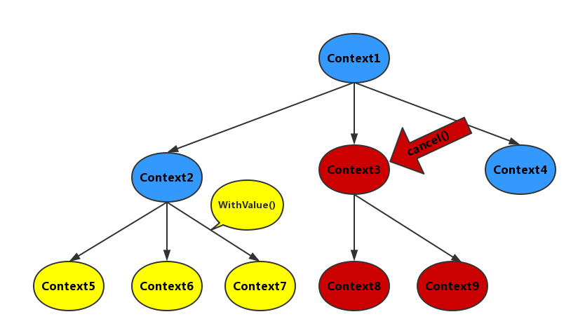

深入 Go 语言之 goroutine 并发控制与通信
开发go程序的时候，时常需要使用goroutine并发处理任务，有时候这些goroutine是相互独立的，而有的时候，多个goroutine之间常常是需要同步与通信的。另一种情况，主goroutine需要控制它所属的子goroutine，总结起来，实现多个goroutine间的同步与通信大致有：
- 全局共享变量
- channel通信（CSP模型）
- Context包
本文章通过goroutine同步与通信的一个典型场景-通知子goroutine退出运行，来深入讲解下golang的控制并发。
通知多个子goroutine退出运行
goroutine作为go语言的并发利器，不仅性能强劲而且使用方便：只需要一个关键字go即可将普通函数并发执行，且goroutine占用内存极小（一个goroutine只占2KB的内存），所以开发go程序的时候很多开发者常常会使用这个并发工具，独立的并发任务比较简单，只需要用go关键字修饰函数就可以启用一个goroutine直接运行；但是，实际的并发场景常常是需要进行协程间的同步与通信，以及精确控制子goroutine开始和结束，其中一个典型场景就是主进程通知名下所有子goroutine优雅退出运行。
由于goroutine的退出机制设计是，goroutine退出只能由本身控制，不允许从外部强制结束该goroutine。只有两种情况例外，那就是main函数结束或者程序崩溃结束运行；所以，要实现主进程控制子goroutine的开始和结束，必须借助其它工具来实现。
控制并发的方法
实现控制并发的方式，大致可分成以下三类：
- 全局共享变量
- channel通信
- Context包
全局共享变量
这是最简单的实现控制并发的方式，实现步骤是：
- 声明一个全局变量；
- 所有子goroutine共享这个变量，并不断轮询这个变量检查是否有更新；
- 在主进程中变更该全局变量；
- 子goroutine检测到全局变量更新，执行相应的逻辑。
示例如下：
package main
import (
"fmt"
"time"
)
func main() {
running := true
f := func() {
for running {
fmt.Println("sub proc running...")
time.Sleep(1 * time.Second)
}
fmt.Println("sub proc exit")
}
go f()
go f()
go f()
time.Sleep(2 * time.Second)
running = false
time.Sleep(3 * time.Second)
fmt.Println("main proc exit")
}
全局变量的优势是简单方便，不需要过多繁杂的操作，通过一个变量就可以控制所有子goroutine的开始和结束；缺点是功能有限，由于架构所致，该全局变量只能是多读一写，否则会出现数据同步问题，当然也可以通过给全局变量加锁来解决这个问题，但那就增加了复杂度，另外这种方式不适合用于子goroutine间的通信，因为全局变量可以传递的信息很小；还有就是主进程无法等待所有子goroutine退出，因为这种方式只能是单向通知，所以这种方法只适用于非常简单的逻辑且并发量不太大的场景，一旦逻辑稍微复杂一点，这种方法就有点捉襟见肘。
channel通信
另一种更为通用且灵活的实现控制并发的方式是使用channel进行通信。
首先，我们先来了解下什么是golang中的channel：Channel是Go中的一个核心类型，你可以把它看成一个管道，通过它并发核心单元就可以发送或者接收数据进行通讯(communication)。
要想理解 channel 要先知道 CSP 模型：
CSP 是 Communicating Sequential Process 的简称，中文可以叫做通信顺序进程，是一种并发编程模型，由 Tony Hoare 于 1977 年提出。简单来说，CSP 模型由并发执行的实体（线程或者进程）所组成，实体之间通过发送消息进行通信，这里发送消息时使用的就是通道，或者叫 channel。CSP 模型的关键是关注 channel，而不关注发送消息的实体。Go 语言实现了 CSP 部分理论，goroutine 对应 CSP 中并发执行的实体，channel 也就对应着 CSP 中的 channel。 也就是说，CSP 描述这样一种并发模型：多个Process 使用一个 Channel 进行通信, 这个 Channel 连结的 Process 通常是匿名的，消息传递通常是同步的（有别于 Actor Model）。
先来看示例代码：
package main
import (
"fmt"
"os"
"os/signal"
"sync"
"syscall"
"time"
)
func consumer(stop <-chan bool) {
for {
select {
case <-stop:
fmt.Println("exit sub goroutine")
return
default:
fmt.Println("running...")
time.Sleep(500 * time.Millisecond)
}
}
}
func main() {
stop := make(chan bool)
var wg sync.WaitGroup
// Spawn example consumers
for i := 0; i < 3; i++ {
wg.Add(1)
go func(stop <-chan bool) {
defer wg.Done()
consumer(stop)
}(stop)
}
waitForSignal()
close(stop)
fmt.Println("stopping all jobs!")
wg.Wait()
}
func waitForSignal() {
sigs := make(chan os.Signal)
signal.Notify(sigs, os.Interrupt)
signal.Notify(sigs, syscall.SIGTERM)
<-sigs
}
这里可以实现优雅等待所有子goroutine完全结束之后主进程才结束退出，借助了标准库sync里的Waitgroup，这是一种控制并发的方式，可以实现对多goroutine的等待，官方文档是这样描述的：
A WaitGroup waits for a collection of goroutines to finish. The main goroutine calls Add to set the number of goroutines to wait for. Then each of the goroutines runs and calls Done when finished. At the same time, Wait can be used to block until all goroutines have finished.
简单来讲，它的源码里实现了一个类似计数器的结构，记录每一个在它那里注册过的协程，然后每一个协程完成任务之后需要到它那里注销，然后在主进程那里可以等待直至所有协程完成任务退出。 使用步骤：
- 创建一个Waitgroup的实例wg；
- 在每个goroutine启动的时候，调用wg.Add(1)注册；
- 在每个goroutine完成任务后退出之前，调用wg.Done()注销。
- 在等待所有goroutine的地方调用wg.Wait()阻塞进程，知道所有goroutine都完成任务调用wg.Done()注销之后，Wait()方法会返回。
该示例程序是一种golang的select+channel的典型用法，我们来稍微深入一点分析一下这种典型用法：
channel
首先了解下channel，可以理解为管道，它的主要功能点是：
- 队列存储数据
- 阻塞和唤醒goroutine
channel 实现集中在文件 runtime/chan.go 中，channel底层数据结构是这样的：
type hchan struct {
qcount uint // 队列中数据个数
dataqsiz uint // channel 大小
buf unsafe.Pointer // 存放数据的环形数组
elemsize uint16 // channel 中数据类型的大小
closed uint32 // 表示 channel 是否关闭
elemtype *_type // 元素数据类型
sendx uint // send 的数组索引
recvx uint // recv 的数组索引
recvq waitq // 由 recv 行为（也就是 <-ch）阻塞在 channel 上的 goroutine 队列
sendq waitq // 由 send 行为 (也就是 ch<-) 阻塞在 channel 上的 goroutine 队列
// lock protects all fields in hchan, as well as several
// fields in sudogs blocked on this channel.
//
// Do not change another G's status while holding this lock
// (in particular, do not ready a G), as this can deadlock
// with stack shrinking.
lock mutex
}
从源码可以看出它其实就是一个队列加一个锁（轻量），代码本身不复杂，但涉及到上下文很多细节，故而不易通读，有兴趣的同学可以去看一下，我的建议是，从上面总结的两个功能点出发，一个是 ring buffer，用于存数据； 一个是存放操作（读写）该channel的goroutine 的队列。
- buf是一个通用指针，用于存储数据，看源码时重点关注对这个变量的读写
- recvq 是读操作阻塞在 channel 的 goroutine 列表，sendq 是写操作阻塞在 channel 的 goroutine 列表。列表的实现是 sudog，其实就是一个对 g 的结构的封装，看源码时重点关注，是怎样通过这两个变量阻塞和唤醒goroutine的
由于涉及源码较多，这里就不再深入。
select
然后是select机制，golang 的 select 机制可以理解为是在语言层面实现了和 select, poll, epoll 相似的功能：监听多个描述符的读/写等事件，一旦某个描述符就绪（一般是读或者写事件发生了），就能够将发生的事件通知给关心的应用程序去处理该事件。 golang 的 select 机制是，监听多个channel，每一个 case 是一个事件，可以是读事件也可以是写事件，随机选择一个执行，可以设置default，它的作用是：当监听的多个事件都阻塞住会执行default的逻辑。
select的源码在runtime/select.go ，看的时候建议是重点关注 pollorder 和 lockorder
- pollorder保存的是scase的序号，乱序是为了之后执行时的随机性。
- lockorder保存了所有case中channel的地址，这里按照地址大小堆排了一下lockorder对应的这片连续内存。对chan排序是为了去重，保证之后对所有channel上锁时不会重复上锁。
因为我对这部分源码研究得也不是很深，故而点到为止即可，有兴趣的可以去看看源码啦！
具体到demo代码：consumer为协程的具体代码，里面是只有一个不断轮询channel变量stop的循环，所以主进程是通过stop来通知子协程何时该结束运行的，在main方法中，close掉stop之后，读取已关闭的channel会立刻返回该channel数据类型的零值，因此子goroutine里的<-stop操作会马上返回，然后退出运行。
事实上，通过channel控制子goroutine的方法可以总结为：循环监听一个channel，一般来说是for循环里放一个select监听channel以达到通知子goroutine的效果。再借助Waitgroup，主进程可以等待所有协程优雅退出后再结束自己的运行，这就通过channel实现了优雅控制goroutine并发的开始和结束。
channel通信控制基于CSP模型，相比于传统的线程与锁并发模型，避免了大量的加锁解锁的性能消耗，而又比Actor模型更加灵活，使用Actor模型时，负责通讯的媒介与执行单元是紧耦合的–每个Actor都有一个信箱。而使用CSP模型，channel是第一对象，可以被独立地创建，写入和读出数据，更容易进行扩展。
杀器Context
Context通常被译作上下文，它是一个比较抽象的概念。在讨论链式调用技术时也经常会提到上下文。一般理解为程序单元的一个运行状态、现场、快照，而翻译中上下又很好地诠释了其本质，上下则是存在上下层的传递，上会把内容传递给下。在Go语言中，程序单元也就指的是Goroutine。
每个Goroutine在执行之前，都要先知道程序当前的执行状态，通常将这些执行状态封装在一个Context变量中，传递给要执行的Goroutine中。上下文则几乎已经成为传递与请求同生存周期变量的标准方法。在网络编程下，当接收到一个网络请求Request，在处理这个Request的goroutine中，可能需要在当前gorutine继续开启多个新的Goroutine来获取数据与逻辑处理（例如访问数据库、RPC服务等），即一个请求Request，会需要多个Goroutine中处理。而这些Goroutine可能需要共享Request的一些信息；同时当Request被取消或者超时的时候，所有从这个Request创建的所有Goroutine也应该被结束。
context在go1.7之后被引入到标准库中，1.7之前的go版本使用context需要安装golang.org/x/net/context包，关于golang context的更详细说明，可参考官方文档：context
Context初试
Context的创建和调用关系是层层递进的，也就是我们通常所说的链式调用，类似数据结构里的树，从根节点开始，每一次调用就衍生一个叶子节点。首先，生成根节点，使用context.Background方法生成，而后可以进行链式调用使用context包里的各类方法，context包里的所有方法：
- func Background() Context
- func TODO() Context
- func WithCancel(parent Context) (ctx Context, cancel CancelFunc)
- func WithDeadline(parent Context, deadline time.Time) (Context, CancelFunc)
- func WithTimeout(parent Context, timeout time.Duration) (Context, CancelFunc)
- func WithValue(parent Context, key, val interface{}) Context
这里仅以WithCancel和WithValue方法为例来实现控制并发和通信： 话不多说，上码：
package main
import (
"context"
"crypto/md5"
"fmt"
"io/ioutil"
"net/http"
"sync"
"time"
)
type favContextKey string
func main() {
wg := &sync.WaitGroup{}
values := []string{"https://www.baidu.com/", "https://www.zhihu.com/"}
ctx, cancel := context.WithCancel(context.Background())
for _, url := range values {
wg.Add(1)
subCtx := context.WithValue(ctx, favContextKey("url"), url)
go reqURL(subCtx, wg)
}
go func() {
time.Sleep(time.Second * 3)
cancel()
}()
wg.Wait()
fmt.Println("exit main goroutine")
}
func reqURL(ctx context.Context, wg *sync.WaitGroup) {
defer wg.Done()
url, _ := ctx.Value(favContextKey("url")).(string)
for {
select {
case <-ctx.Done():
fmt.Printf("stop getting url:%s\n", url)
return
default:
r, err := http.Get(url)
if r.StatusCode == http.StatusOK && err == nil {
body, _ := ioutil.ReadAll(r.Body)
subCtx := context.WithValue(ctx, favContextKey("resp"), fmt.Sprintf("%s%x", url, md5.Sum(body)))
wg.Add(1)
go showResp(subCtx, wg)
}
r.Body.Close()
//启动子goroutine是为了不阻塞当前goroutine，这里在实际场景中可以去执行其他逻辑，这里为了方便直接sleep一秒
// doSometing()
time.Sleep(time.Second * 1)
}
}
}
func showResp(ctx context.Context, wg *sync.WaitGroup) {
defer wg.Done()
for {
select {
case <-ctx.Done():
fmt.Println("stop showing resp")
return
default:
//子goroutine里一般会处理一些IO任务，如读写数据库或者rpc调用，这里为了方便直接把数据打印
fmt.Println("printing: ", ctx.Value(favContextKey("resp")))
time.Sleep(time.Second * 1)
}
}
}
前面我们说过Context就是设计用来解决那种多个goroutine处理一个Request且这多个goroutine需要共享Request的一些信息的场景，以上是一个简单模拟上述过程的demo。
首先调用context.Background()生成根节点，然后调用withCancel方法，传入根节点，得到新的子Context以及根节点的cancel方法（通知所有子节点结束运行），这里要注意：该方法也返回了一个Context，这是一个新的子节点，与初始传入的根节点不是同一个实例了，但是每一个子节点里会保存从最初的根节点到本节点的链路信息 ，才能实现链式。
程序的reqURL方法接收一个url，然后通过http请求该url获得response，然后在当前goroutine里再启动一个子groutine把response打印出来，然后从ReqURL开始Context树往下衍生叶子节点（每一个链式调用新产生的ctx）,中间每个ctx都可以通过WithValue方式传值（实现通信），而每一个子goroutine都能通过Value方法从父goroutine取值，实现协程间的通信，每个子ctx可以调用Done方法检测是否有父节点调用cancel方法通知子节点退出运行，根节点的cancel调用会沿着链路通知到每一个子节点，因此实现了强并发控制，流程如图：

该demo结合前面说的WaitGroup实现了优雅并发控制和通信，关于WaitGroup的原理和使用前文已做解析，这里便不再赘述，当然，实际的应用场景不会这么简单，处理Request的goroutine启动多个子goroutine大多是处理IO密集的任务如读写数据库或rpc调用，然后在主goroutine中继续执行其他逻辑，这里为了方便讲解做了最简单的处理。
Context作为golang中并发控制和通信的大杀器，被广泛应用，一些使用go开发http服务的同学如果阅读过这些很多 web framework的源码就知道，Context在web framework随处可见，因为http请求处理就是一个典型的链式过程以及并发场景，所以很多web framework都会借助Context实现链式调用的逻辑。有兴趣可以读一下context包的源码，会发现Context的实现其实是结合了Mutex锁和channel而实现的，其实并发、同步的很多高级组件万变不离其宗，都是通过最底层的数据结构组装起来的，只要知晓了最基础的概念，上游的架构也可以一目了然。
context使用规范
最后，Context虽然是神器，但开发者使用也要遵循基本法，以下是一些Context使用的规范：
- Do not store Contexts inside a struct type; instead, pass a Context explicitly to each function that needs it. The Context should be the first parameter, typically named ctx；不要把Context存在一个结构体当中，显式地传入函数。Context变量需要作为第一个参数使用，一般命名为ctx；
- Do not pass a nil Context, even if a function permits it. Pass context.TODO if you are unsure about which Context to use；即使方法允许，也不要传入一个nil的Context，如果你不确定你要用什么Context的时候传一个context.TODO；
- Use context Values only for request-scoped data that transits processes and APIs, not for passing optional parameters to functions；使用context的Value相关方法只应该用于在程序和接口中传递的和请求相关的元数据，不要用它来传递一些可选的参数；
- The same Context may be passed to functions running in different goroutines; Contexts are safe for simultaneous use by multiple goroutines；同样的Context可以用来传递到不同的goroutine中，Context在多个goroutine中是安全的；
参考链接